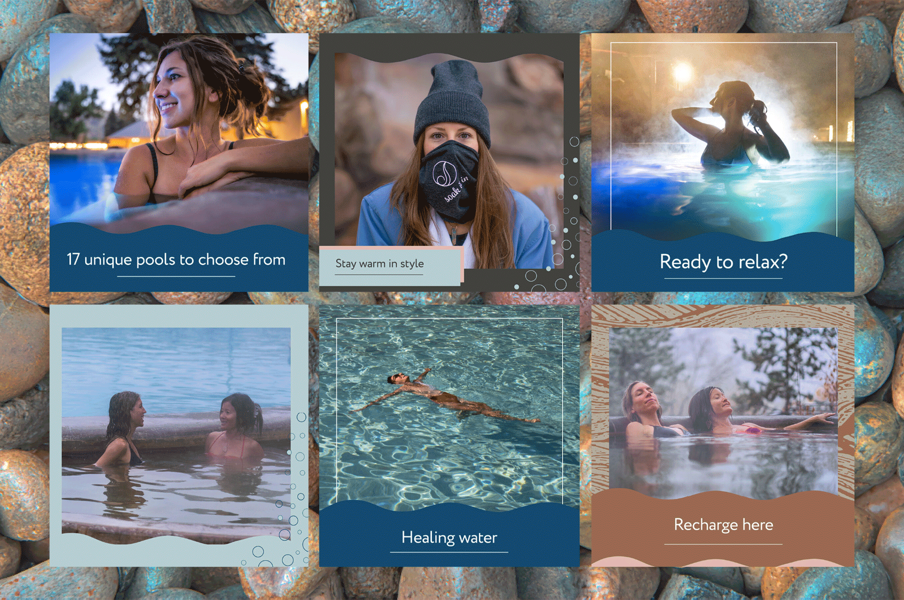

I made Bugette purely for the love of designing. I wanted to design something I'd like to see on the grocery store shelves. I choose colors reminiscent of a cozy terra cotta seaside village and typography that feels nostalgic. The logo or "bug" is a stylized cricket with little stalks of wheat details inside the legs to represent the grain it's replacing. That little detail is then brought out and used as a pattern in some of the packaging and marketing design. The idea was to wrap up a sustainable heathfood in branding so quaint you have to buy it. In my vision, this product tastes good enough to be worth the incredibly cute design.
A quick research pull of similar products revealed a gap in the field. There are other cricket based products out there, and their branding is geared towards making it look like a primal source of protein: dark colors, rough textures, messaging that focuses on getting back to basic elements. This informed by concept in a couple different ways. First, I want it to look deliscious — no actual photos of bugs, fun colors, soft shapes, friendly typography, playful pattern. After that I want the messaging to be focused on sustainability — for your diet as well as for the planet. This appeals to people who are grocery shopping and looking for healthy protein sources, are environmentally aware of the effect that food choices have on our systems, and want their food to actually taste good.

